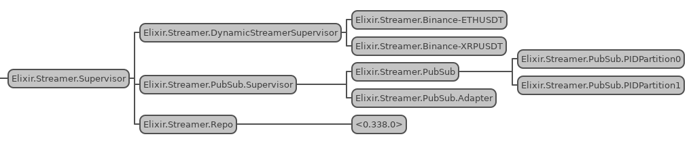
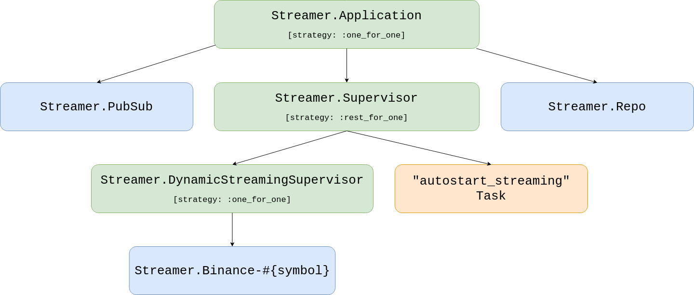
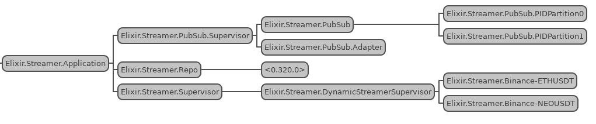

Chapter 10 Supervise and autostart streaming
In the previous chapter, we moved our trading settings into a database,
giving each symbol its own configurable parameters.
But there’s still a major pain point: every time we restart the application,
we have to manually call Streamer.start_streaming/1 for each symbol we want to stream.
Even worse, there’s no supervision around our streamer processes.
If a Streamer.Binance process crashes due to a network hiccup or WebSocket disconnection,
it’s gone forever - no automatic restart, no recovery.
In this chapter, we’ll fix both problems.
We’ll add a DynamicSupervisor to manage our streamer processes,
implement proper start/stop functionality with database-backed settings,
and create an autostart mechanism that resumes streaming on all previously enabled symbols when the application boots.
By the end, our streaming infrastructure will be robust and self-healing.
Let’s make our streamers supervised and persistent!
10.1 Objectives
- describe and design the required functionality
- register the
Streamer.Binanceprocesses with names - set up Ecto inside the
streamerapp - create and migrate the DB
- seed default settings
- implement the supervision tree and start streaming functionality
- implement the stop functionality
- implement the autostart streaming functionality
- test the implementation
10.2 Describe and design the required functionality
At this moment, there’s no supervision around the streamer processes. If an error occurs inside a Streamer.Binance process, it will die and never come back up.
That’s less than perfect, but we can use supervisors to the rescue.
We will create a new Streamer.DynamicStreamerSupervisor module inside our streamer application that will supervise the Streamer.Binance processes.
Next, we will consider a list of functionalities that we would like it to provide:
- start streaming. This will require a new
Streamer.Binanceprocess started under the
Streamer.DynamicStreamerSupervisor. We will put logic responsible for starting that process inside theStreamer.DynamicStreamerSupervisormodule. - stop streaming. To be able to stop the
Streamer.Binanceprocess streaming on a specific symbol, we will need to know that process’ PID based only on symbol string(ie. “XRPUSDT”). To make that possible, we will need to register everyStreamer.Binanceprocess with a name that we will be able to “reverse-engineer” based only on symbol string for example::"#{__MODULE__}-#{symbol}" - autostart streaming. At the start of streaming on a symbol, we should persist that action as a symbol’s streaming setting inside the database. We will need to generate a new Ecto.Repo, configure, create and migrate DB (just like in the last chapter for the
naiveapp) to be able to retrieve that list. We will write a logic that will fetch settings of the symbols, autostart the ones that are enabled and place all that logic inside theStreamer.DynamicStreamerSupervisormodule. We will introduce a Task child process that will utilize the logic from theStreamer.DynamicStreamerSupervisorto fetch those enabled symbols and startStreamer.Binanceprocesses on startup - we will describe all of this separately in its section in this chapter.
10.3 Register the Streamer.Binance processes with names
To be able to perform start/stop streaming on a symbol we will first need to be able to figure out the PID of the Streamer.Binance process that is streaming that symbol.
The first change that we need to apply will be to register Streamer.Binance processes with names by passing the 4th argument to the WebSockex.start_link/4 function:
# /apps/streamer/lib/streamer/binance.ex
def start_link(symbol) do
Logger.info(
"Binance streamer is connecting to websocket " <>
"stream for #{symbol} trade events"
)
WebSockex.start_link(
"#{@stream_endpoint}#{String.downcase(symbol)}@trade", # <= lowercase symbol
__MODULE__,
nil,
name: :"#{__MODULE__}-#{String.upcase(symbol)}" # <= uppercase symbol
)
endA few things worth mentioning here:
- inside the URL we need to use a lowercase symbol
- we are registering the process using the uppercase symbol so the name will remain consistent with the
naiveapplication’s processes - to register the process we are sending a keyword list as the 4th argument to the
start_link/4function of theWebSockexmodule (link to source - again, no need to be afraid of reading the source code in Elixir, that’s the beauty of it)
10.4 Set up Ecto inside the streamer app
In the same fashion as in the last chapter, we will need to set up the database inside the streamer app. We will use the same Postgres server(docker container) that we’ve set up inside docker in the last chapter, just a separate database, so there’s no need to update the docker-compose.yml file.
As previously, the first step will be to add the Ecto modules and Postgres-related packages into deps inside the mix.exs file of the streamer app.
Additionally, we will add the binance module that we will use to fetch all symbols supported by the exchange
(to generate default settings as we’ve done for the naive application).
We can’t use BinanceMock here as it would cause a circular dependency - BinanceMock depends on the streamer app:
# /apps/streamer/mix.exs
...
defp deps do
[
{:binance, "~> 1.0"}, # <= used to retrieve symbols list(exchangeInfo)
{:ecto_sql, "~> 3.0"}, # <= added dependency
{:ecto_enum, "~> 1.4"}, # <= added dependency
{:jason, "~> 1.2"},
{:phoenix_pubsub, "~> 2.0"},
{:postgrex, ">= 0.0.0"}, # <= added dependency
{:websockex, "~> 0.4"}
]
endRun mix deps.get to install new dependencies.
We can now use the Ecto generator to add a repository to the Streamer application:
$ cd apps/streamer
$ mix ecto.gen.repo -r Streamer.Repo
* creating lib/streamer
* creating lib/streamer/repo.ex
* updating ../../config/config.exs
...Update the config to match access details to the Postgres Docker instance:
# /config/config.exs
config :streamer, Streamer.Repo,
database: "streamer", # <= database updated
username: "postgres", # <= username updated
password: "postgres", # <= password updated
hostname: "localhost"
...
config :streamer, # <= added line
ecto_repos: [Streamer.Repo] # <= added lineThe last step will be to update the children list of the Streamer.Application module:
10.5 Create and migrate the DB
We can now create a new streamer database using the mix tool, after that we will be able to generate a migration file that will create the settings table:
$ mix ecto.create -r Streamer.Repo
The database for Streamer.Repo has been created
$ cd apps/streamer
$ mix ecto.gen.migration create_settings
* creating priv/repo/migrations
* creating priv/repo/migrations/20210203184805_create_settings.exsWe can safely start just with id, symbol and status columns, where the last one will follow the same enum idea from the previous chapter:
# /apps/streamer/priv/repo/migrations/20210203184805_create_settings.exs
defmodule Streamer.Repo.Migrations.CreateSettings do
use Ecto.Migration
alias Streamer.Schema.StreamingStatusEnum
def change do
StreamingStatusEnum.create_type()
create table(:settings, primary_key: false) do
add(:id, :uuid, primary_key: true)
add(:symbol, :text, null: false)
add(:status, StreamingStatusEnum.type(), default: "off", null: false)
timestamps()
end
create(unique_index(:settings, [:symbol]))
end
endThat finishes our work on the migration file. Now we need to add the StreamingStatusEnum in the same way as in the last chapter.
Create a schema directory inside /apps/streamer/lib/streamer/, then create a new file called streaming_status_enum.ex with the enum definition:
# /apps/streamer/lib/streamer/schema/streaming_status_enum.ex
import EctoEnum
defenum(Streamer.Schema.StreamingStatusEnum, :streaming_status, [:on, :off])Let’s run the migration to create the table, unique index, and the enum:
$ mix ecto.migrate
21:31:56.850 [info] == Running 20210203184805
Streamer.Repo.Migrations.CreateSettings.change/0 forward
21:31:56.850 [info] execute "CREATE TYPE public.streaming_status AS ENUM ('on', 'off')"
21:31:56.851 [info] create table settings
21:31:56.912 [info] create index settings_symbol_index
21:31:56.932 [info] == Migrated 20210203184805 in 0.0sWe can now create a schema file for the settings table. Inside the
/apps/streamer/lib/streamer/schema directory create a file called settings.ex:
# /apps/streamer/lib/streamer/schema/settings.ex
defmodule Streamer.Schema.Settings do
use Ecto.Schema
alias Streamer.Schema.StreamingStatusEnum
@primary_key {:id, :binary_id, autogenerate: true}
schema "settings" do
field(:symbol, :string)
field(:status, StreamingStatusEnum)
timestamps()
end
endWe are now ready to query the table but first, we need to insert the default settings into the database.
10.6 Seed default settings
As with the settings inside the naive application, we will fetch all symbols from binance and bulk insert them into the database.
First let’s create a new file called seed_settings.exs inside the apps/streamer/priv directory. As this file is nearly the same as the one from the last chapter I will skip the lengthy explanation - this is the script:
# /apps/streamer/priv/seed_settings.exs
require Logger
alias Streamer.Repo
alias Streamer.Schema.Settings
Logger.info("Fetching exchange info from Binance to create streaming settings")
{:ok, %{symbols: symbols}} = Binance.get_exchange_info()
timestamp = NaiveDateTime.utc_now()
|> NaiveDateTime.truncate(:second)
base_settings = %{
symbol: "",
status: "off",
inserted_at: timestamp,
updated_at: timestamp
}
Logger.info("Inserting default settings for symbols")
total_count = symbols
|> Enum.map(&(%{base_settings | symbol: &1["symbol"]}))
|> Enum.chunk_every(1000)
|> Enum.reduce(0, fn batch, acc ->
{count, nil} = Repo.insert_all(Settings, batch)
Logger.info("Inserted batch of #{count} symbols")
acc + count
end)
Logger.info("Inserted settings for #{total_count} symbols")Don’t forget to run the seeding script before progressing forward:
$ cd apps/streamer
$ mix run priv/seed_settings.exs
22:03:46.675 [info] Fetching exchange info from Binance to create streaming settings
22:03:51.386 [info] Inserting default settings for symbols
22:03:51.438 [info] Inserted batch of 1000 symbols
22:03:51.448 [info] Inserted batch of 375 symbols
22:03:51.462 [info] Inserted settings for 1375 symbols10.7 Implement the supervision tree and start streaming functionality
Let’s start by creating a new file called dynamic_streamer_supervisor.ex inside the
/apps/streamer/lib/streamer directory. Let’s start with a default implementation from the docs (updated with correct module and process names):
# /apps/streamer/lib/streamer/dynamic_streamer_supervisor.ex
defmodule Streamer.DynamicStreamerSupervisor do
use DynamicSupervisor
alias Streamer.Repo
alias Streamer.Schema.Settings
def start_link(init_arg) do
DynamicSupervisor.start_link(__MODULE__, init_arg, name: __MODULE__)
end
def init(_init_arg) do
DynamicSupervisor.init(strategy: :one_for_one)
end
endNext, we will add the start_streaming/1 function at the bottom of the
Streamer.DynamicStreamerSupervisor module:
# /apps/streamer/lib/streamer/dynamic_streamer_supervisor.ex
...
def start_streaming(symbol) when is_binary(symbol) do
case get_pid(symbol) do
nil ->
Logger.info("Starting streaming on #{symbol}")
{:ok, _settings} = update_streaming_status(symbol, "on")
{:ok, _pid} = start_streamer(symbol)
pid ->
Logger.warning("Streaming on #{symbol} already started")
{:ok, _settings} = update_streaming_status(symbol, "on")
{:ok, pid}
end
endTo unpack above - we are checking is there a streamer process already running for the passed symbol and based on the result of that check, we either start the new streaming process(and update the symbol’s settings) or just update the symbol’s settings.
Inside the start_streaming/1 function, we are using 3 helper functions that we need to add at the bottom of the file:
# /apps/streamer/lib/streamer/dynamic_streamer_supervisor.ex
defp get_pid(symbol) do
Process.whereis(:"Elixir.Streamer.Binance-#{String.upcase(symbol)}")
end
defp update_streaming_status(symbol, status)
when is_binary(symbol) and is_binary(status) do
Repo.get_by(Settings, symbol: String.upcase(symbol))
|> Ecto.Changeset.change(%{status: status})
|> Repo.update()
end
defp start_streamer(symbol) do
DynamicSupervisor.start_child(
Streamer.DynamicStreamerSupervisor,
{Streamer.Binance, symbol}
)
endThe above functions are quite self-explanatory, get_pid/1 is a convenience wrapper,
update_streaming_status/2 will update the status field for the passed symbol, start_streamer/1 will instruct the Streamer.DynamicStreamerSupervisor to start a new Streamer.Binance process with symbol passed as the first argument.
The last step to get the above function to work(and future ones in this module) would be to add a require, an import, and a few aliases at the top of the module:
# /apps/streamer/lib/streamer/dynamic_streamer_supervisor.ex
require Logger
import Ecto.Query, only: [from: 2]
alias Streamer.Repo
alias Streamer.Schema.SettingsAs we added a new start_streaming/1 logic inside the Streamer.DynamicStreamerSupervisor, we need to replace the start_streaming/1 implementation inside the Streamer module:
# /apps/streamer/lib/streamer.ex
...
alias Streamer.DynamicStreamerSupervisor
def start_streaming(symbol) do
symbol
|> String.upcase()
|> DynamicStreamerSupervisor.start_streaming()
endAs we don’t need to put any logic inside the Streamer.start_streaming/1 function, we can just delegate the call straight to the Streamer.DynamicStreamerSupervisor module.
The last step will be to append the Streamer.DynamicStreamSupervisor to the children list of the Streamer.Application:
# /apps/streamer/lib/streamer/application.ex
def start(_type, _args) do
children = [
...
{Streamer.DynamicStreamerSupervisor, []}
]At this moment our supervision tree already works and all streamer processes are being monitored by the Streamer.DynamicStreamerSupervisor:

10.8 Implement the stop functionality
As we can see, we are now registering the Streamer.Binance processes with names that contain their symbols. We will be able to retrieve PIDs of those registered processes just by simply passing the symbol string(ie. “XRPUSDT”) into get_pid/1, which will allow us to then request termination of those processes by the Streamer.DynamicStreamerSupervisor.
Let’s write a stop_streaming/1 logic inside the Streamer.DynamicStreamerSupervisor module(put it above first private function):
# /apps/streamer/lib/streamer/dynamic_streamer_supervisor.ex
def stop_streaming(symbol) when is_binary(symbol) do
case get_pid(symbol) do
nil ->
Logger.warning("Streaming on #{symbol} already stopped")
{:ok, _settings} = update_streaming_status(symbol, "off")
pid ->
Logger.info("Stopping streaming on #{symbol}")
:ok =
DynamicSupervisor.terminate_child(
Streamer.DynamicStreamerSupervisor,
pid
)
{:ok, _settings} = update_streaming_status(symbol, "off")
end
endstop_streaming/1 looks very similar to start_streaming/1, we are checking is there already a Streamer.Binance process registered for that symbol, and we either ask the
Streamer.DynamicStreamerSupervisor to terminate it for us (using the
DynamicSupervisor.terminate_child/2 function + update the status) or just update the status to be off.
We need to update the Streamer module to provide the interface to stop streaming on a symbol:
10.9 Implement the autostart streaming functionality
Currently, when we shut down the Elixir app, settings persist in the database but streamers are not started on the next init.
To fix this, we will add autostart_streaming/0 inside the Streamer.DynamicStreamerSupervisor.
Note: It’s very important to differentiate between module and process. We will put our autostarting logic inside the module but the Streamer.DynamicStreamerSupervisor process won’t run it.
We will introduce a new Task process that will execute all the autostarting logic.
That will cover the problem of the Supervisor executing too much business logic (as the Task will execute it), but how will we supervise them together?
At init both will start, the Streamer.DynamicStreamerSupervisor first, and then Task will ask it to start multiple children and that will work fine. The problem occurs when the Streamer.DynamicStreamerSupervisor would die because of any reason. Currently, it’s supervised using the one_for_one strategy(and the Task would be as well) which means that it will get started again by the Streamer.Application process but at that moment the “autostarting” Task won’t be there anymore to start streaming on all enabled symbols.
We can clearly see that whenever the Streamer.DynamicStreamerSupervisor will die it needs to be started again together with the “autostart” Task and this won’t fit our current Streamer.Application’s strategy.
In cases like those, a new level of supervision needs to be introduced that will have a different supervision strategy for those “coupled” processes. We will rename the process name of the Streamer.Application (which is currently registered as Streamer.Supervisor) to Streamer.Application. Then we will introduce the new Streamer.Supervisor module and register it under the same name. We will attach both Streamer.DynamicStreamerSupervisor and Task to the Streamer.Supervisor and assign it with the rest_for_one strategy which will restart the Task whenever
Streamer.DynamicStreamerSupervisor would die:

Let’s start by creating the autostart_streaming/0 functionality inside the
Streamer.DynamicStreamerSupervisor:
# /apps/streamer/lib/streamer/dynamic_streamer_supervisor.ex
# add below after the `init/1` function
def autostart_streaming do
fetch_symbols_to_stream()
|> Enum.map(&start_streaming/1)
end
# and this at the end of the module
defp fetch_symbols_to_stream do
Repo.all(
from(s in Settings,
where: s.status == "on",
select: s.symbol
)
)
endautostart_streaming/0 function fetches all symbols from the settings table with status == "on" then it passes them one by one into the start_streaming/1 function using Enum.map/2.
We can now focus on referring to the above autostarting logic inside the new supervisor that we will create now. Let’s start by creating a new file called supervisor.ex inside the /apps/streamer/lib/streamer/ directory and fill it with default Supervisor implementation:
# /apps/streamer/lib/streamer/supervisor.ex
defmodule Streamer.Supervisor do # <= updated module name
use Supervisor
def start_link(init_arg) do
Supervisor.start_link(__MODULE__, init_arg, name: __MODULE__)
end
def init(_init_arg) do
children = [
]
Supervisor.init(children, strategy: :one_for_one)
end
endWe can now update the strategy to rest_for_one:
# /apps/streamer/lib/streamer/supervisor.ex
def init(_init_arg) do
...
Supervisor.init(children, strategy: :rest_for_one) # <= strategy updated
endThe last step inside our new supervisor will be to add 2 children: Streamer.DynamicStreamerSupervisor and Task (that will autostart the symbol streamers):
# /apps/streamer/lib/streamer/supervisor.ex
def init(_init_arg) do
children = [
{Streamer.DynamicStreamerSupervisor, []},
{Task,
fn ->
Streamer.DynamicStreamerSupervisor.autostart_streaming()
end}
]
...
endThe final update in this chapter will be to replace the Streamer.DynamicStreamerSupervisor as one of the children inside the Streamer.Application module and update the name that the application process registers under:
10.10 Manual testing in IEx
Let’s start an IEx session and call the start_streaming/1 function twice for two different symbols and then exit using double Ctrl+c:
$ iex -S mix
...
iex(1)> Streamer.start_streaming("XRPUSDT")
18:51:39.809 [info] Starting streaming on XRPUSDT
{:ok, #PID<0.370.0>}
iex(2)> Streamer.start_streaming("ETHUSDT")
18:51:47.288 [info] Starting streaming on ETHUSDT
{:ok, #PID<0.377.0>}Now, open a new IEx session and look at the output:
$ iex -S mix
...
iex(1)>
18:53:48.920 [info] Starting streaming on XRPUSDT
18:53:50.306 [info] Starting streaming on ETHUSDTWe can also confirm that streamer processes are there by using :observer.start():
...
iex(2)> Mix.ensure_application!(:wx)
:ok
iex(3)> Mix.ensure_application!(:runtime_tools)
:ok
iex(4)> Mix.ensure_application!(:observer)
:ok
iex(5)> :observer.start()
Inside the same IEx session run the following:
iex(6)> Streamer.stop_streaming("XRPUSDT")
18:57:37.205 [info] Stopping streaming on XRPUSDT
{:ok,
%Streamer.Schema.Settings{
...
}}
iex(7)> Streamer.stop_streaming("ETHUSDT")
18:57:51.553 [info] Stopping streaming on ETHUSDT
{:ok,
%Streamer.Schema.Settings{
...
}}Stop the IEx session and start a new one - streamers shouldn’t be autostarted anymore.
The streamer app is now production-ready! We’ve added:
- Proper supervision for all
Streamer.Binanceprocesses viaDynamicSupervisor - Start/stop functionality with database-backed status persistence
- Automatic streaming resumption on application restart
- A
rest_for_onesupervision strategy that ensures autostart runs whenever the supervisor restarts
The supervision tree we built ensures that if any streamer crashes, it gets restarted automatically.
And if the entire DynamicStreamerSupervisor crashes, the autostart Task will run again to restore all enabled streamers.
So, What’s Next?
We’ve given the streamer app proper supervision and autostart capabilities.
Now it’s time to do the same for the naive trading app - but with an important addition.
In the next chapter, we’ll implement start, stop, and autostart for trading, plus a new “shutdown” feature. Unlike an abrupt stop that kills traders mid-trade, shutdown will let traders finish their current trade cycles before gracefully terminating. This is crucial for a real trading system where you don’t want to be left holding positions.
[Note] Please remember to run mix format to keep things nice and tidy.
The source code for this chapter can be found in the book’s source code repository (branch: chapter_10).